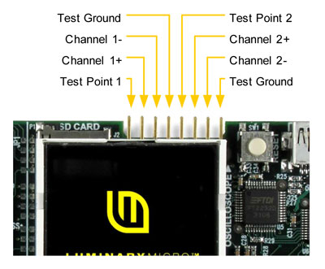

Signal connections for both the oscilloscope channels along with two test signals can be found on the 8 pin connector immediately above the CSTN display on your Stellaris evaluation. The pins are as shown below.

Test Point 1 is connected to the speaker input on the EK board and allows the signal for the keyboard click to be viewed. Note that waveform capture is typically not taking place while the keyboard is being serviced so the click may not be seen on the waveform display for every keypress.
Test Point 2 is connected to the output of a PWM generator set to drive a 1KHz square wave.
In the absence of an external waveform, the test signals can be used to provide input to the oscilloscope channels by merely attaching leads between adjacent pins on the connector - pin 1 to pin 2, pin 3 to pin 4, etc. This will provide the speaker output on channel 1 of the oscilloscope and a 1KHz square wave on channel 2.